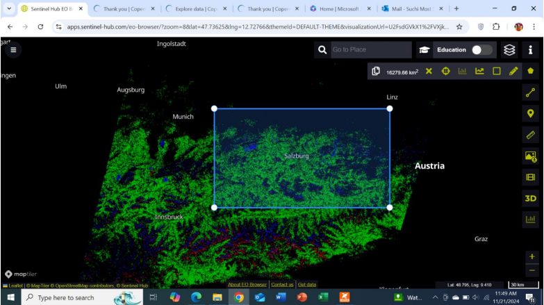
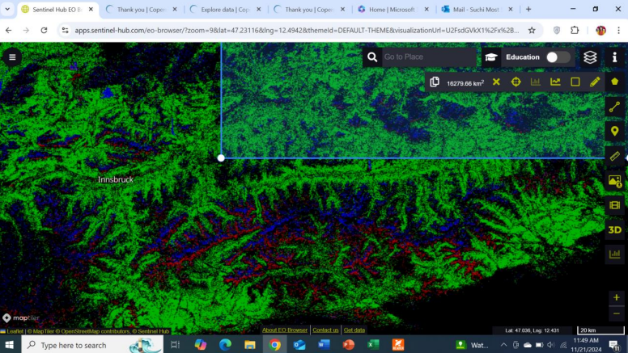

Sanjida Suchi
Geospatial Researcher
Tools & Technologies
- • Sentinel-1 SAR
- • SNAP Software
- • Snaphu
- • ArcGIS Pro
City Highlights for Salzburg using Sentinel-2 Data
This analysis aims to identify urban areas, vegetation, and water bodies within Salzburg city using Sentinel-2 data. The application of custom scripts utilizing NDVI, NDWI, and NDBI provides valuable insights into the city's structure and its relationship with natural environments.
Goal and Objectives
The goal of this project is to identify and visualize urban areas, vegetation, and water bodies within Salzburg city. The objectives of the project include:
- Utilize Sentinel-2 imagery to detect and classify urban areas, vegetation, and water bodies.
- Apply NDVI, NDWI, and NDBI indices to preprocess the data and enhance feature classification.
- Provide an overview of Salzburg's urban expansion, vegetation, and water relations.
Data Used & Methodology
Sentinel-2 imagery was selected for its high-resolution, multispectral capabilities, ideal for urban and environmental analysis. The following indices were used for preprocessing:
- NDVI (Normalized Difference Vegetation Index): Used to highlight areas with a high probability of vegetation.
- NDWI (Normalized Difference Water Index): Used to identify water bodies like rivers, lakes, and pools.
- NDBI (Normalized Difference Built-up Index): Used to detect urban areas, focusing on rooftops and buildings.
Results and Observations
The results from the custom script using Sentinel-2 data highlighted three primary features within Salzburg city:
- Urban Areas (Rooftops and Buildings): Identified with red color, representing areas with high built-up features.
- Vegetation Areas: Marked in green, showing regions with a high probability of vegetation.
- Water Bodies: Depicted in blue, indicating rivers, pools, and the sea.
Visual Representation
City Highlights (Using Custom Script)
True Color Representation
Conclusion
The application of NDVI, NDWI, and NDBI indices using Sentinel-2 data provides valuable insights into Salzburg's urban environment and natural features. The results highlight the spatial distribution of built-up areas, vegetation, and water bodies, offering a comprehensive overview of the city’s landscape and potential for future urban planning and environmental management.